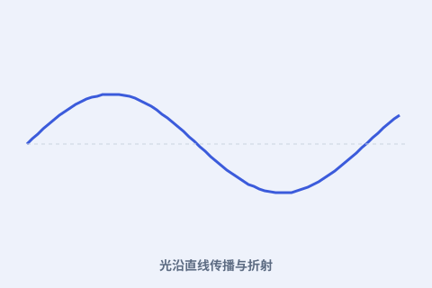

一、眼睛如何成像
在《光学补遗》里，开普勒描述：光线通过晶状体在视网膜上形成倒立的像，大脑再把它“正过来”。这是近代视觉理论的起点。

二、透镜与望远镜
他研究凸透镜与凹透镜如何组合放大远处物体，解释了当时新出现的望远镜为什么能望远。今天中学显微镜、望远镜的光路，仍沿用他的分析。
三、折射的规律
开普勒探讨了光从一种介质进入另一种时偏折（折射）的现象，并尝试用数学描述它。虽然完整的折射定律由后来者给出，他已铺好了路。
四、暗箱与成像
他分析了“暗箱”（小孔成像）等现象，把光学从哲学思辨拉向可测量的几何。近代摄影与相机的原理，正是这条线索的延续。